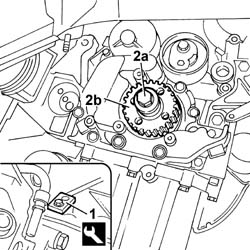
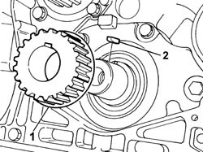
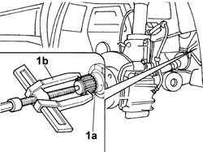
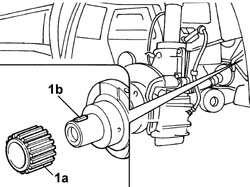
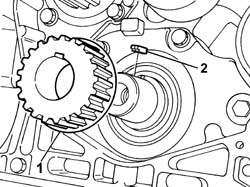

1032B44 TOOTHED DRIVE PULLEY - R + R WITH TIMING BELT REMOVED
- Path
- Procedures > 10 ENGINE UNIT > 1032 TIMING SYSTEM > 1032B BELT TIMING SYSTEM > 1032B44 TOOTHED DRIVE PULLEY - R + R WITH TIMING BELT REMOVED
- Kind
- repair procedure (removal / refitting; the operation number is the code)
- Applies to
- all engines; all production periods
- Interactive page
- https://sloeber94.github.io/elrnDB-fDct/en/#/244000697
Applies to: engines: 2.3 JTD 16V; all production periods
 Removing
Removing
 Refitting
Refitting1. Position the flywheel lock.
2. Undo the fixing bolt (2a) and remove the pulley (2b).
 | Description | Code | Function |
|---|---|---|---|
1 | Counter-torque | 1.870.765.000 | Flywheel lock |

Applies to: engines: 2.3 JTD 16V; all production periods
Refitting
Removing- Position the pulley in the special housing on the crankshaft.
- Tighten the fixing bolt to torque.
 | Value - daNm | Fastening | Component | Ø |
|---|---|---|---|---|
. | 35 | Bolt | DRIVE PULLEY(PULLIES) TIMING | M18x1.5 |
- Remove the flywheel lock.
| Description | Code | Function |
|---|---|---|---|
. | Counter-torque | 1.870.765.000 | Flywheel lock |
Applies to: engines: 2.0 16V; all production periods
Removing
Refitting1. Remove the toothed pulley from the crankshaft housing.
2. Remove the fastening tab.

Applies to: engines: 2.0 16V; all production periods
Refitting
Removing- Place the fastening tab in position.
- Position the pulley in the special housing on the crankshaft.
Applies to: all engines; all production periods
Removing
RefittingOp. 1020D10 FRONT CRANK SHAFT OIL SEAL COVER - R + R AND REPLACE SEALS WITH TIMING BELT REMOVED
1. Make two millings on the toothed drive pulley (1a) and remove the pulley using a suitable extractor (1b).

Applies to: all engines; all production periods
Refitting
Removing- Place the toothed drive pulley in the oven.
1. Fit the drive pulley ensuring that the groove (1a) coincides with the key (1b).

Applies to: all engines; all production periods
- Take the pulley out of the oven using suitable pliers and fit it on the crankshaft with the help of a drift.
Op. 1020D10 FRONT CRANK SHAFT OIL SEAL COVER - R + R AND REPLACE SEALS WITH TIMING BELT REMOVED
Applies to: engines: 2.0 JTD 8V; all production periods
Removing
Refitting1. Remove the fastening tabs.
2. Remove the toothed pulley from the crankshaft housing.

Applies to: engines: 2.0 JTD 8V; all production periods
Refitting
Removing- Position the pulley in the special housing on the crankshaft.
- Place the fastening tabs in position.